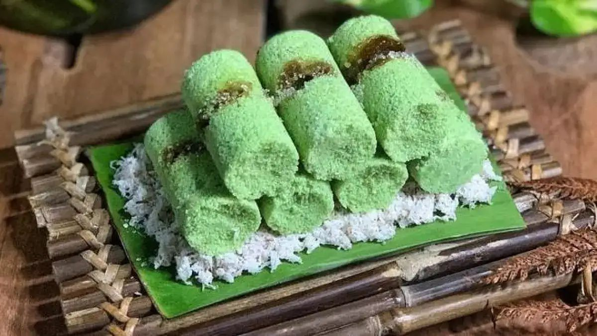

Resep Kue Putu
Kue Putu adalah kue tradisional yang terbuat dari tepung ketan dengan isi kelapa parut manis di dalamnya. Biasanya kue ini dimasak menggunakan cetakan khusus yang menghasilkan bentuk bulat dengan isi yang meleleh di dalamnya.
Bahan-bahan:
- 200 gram tepung ketan
- 100 ml air daun pandan suji
- 100 gram kelapa parut kasar
- 100 gram gula merah serut halus
- 1/4 sdt garam
Cara Membuat:
- Campur tepung ketan dengan air daun pandan hingga adonan bisa dipulung.
- Isi adonan dengan gula merah serut, bentuk bulat.
- Masukkan kelapa parut yang sudah dicampur garam ke dalam cetakan.
- Rebus dalam kukusan hingga matang, sekitar 20-30 menit.
- Angkat dan sajikan hangat-hangat.